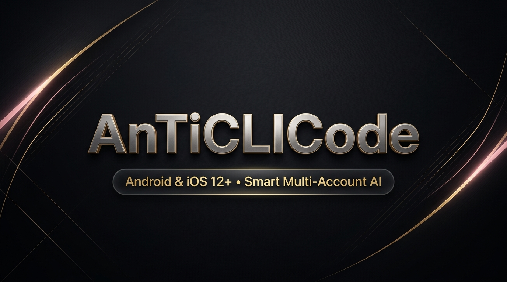
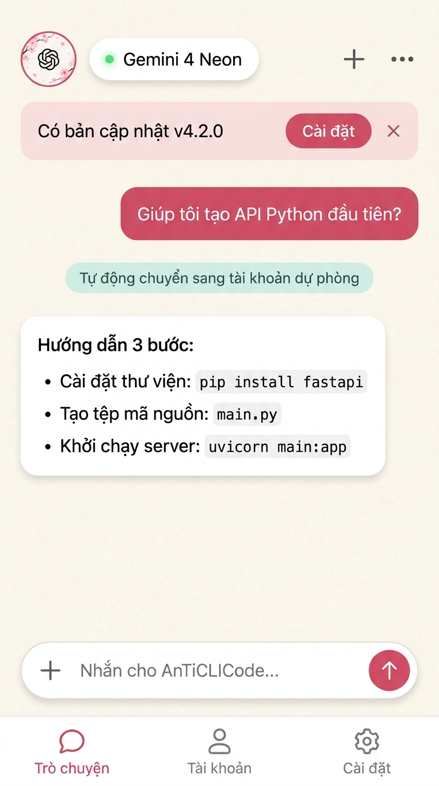
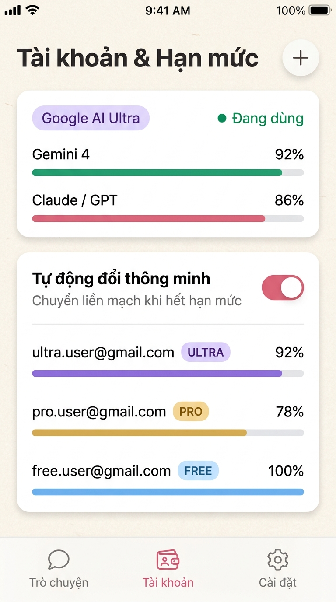
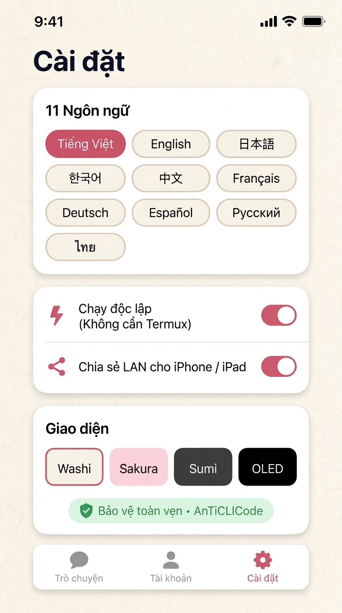
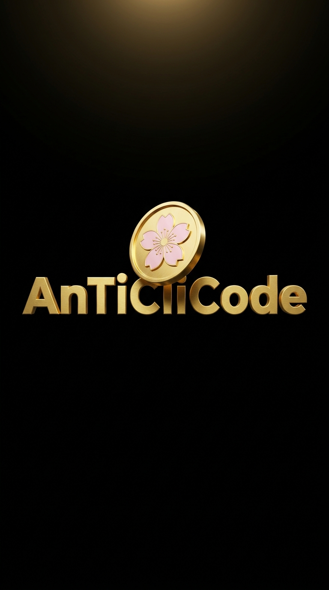

⚡ AnTiCLICode v4.2.0
Trợ lý AI & lập trình di động thân thiện cho người mới — Tự động đổi đa tài khoản thông minh không ngắt quãng, chạy độc lập trên Android không cần Termux & hỗ trợ iPhone/iPad từ iOS 12.0+ (iPhone 6+).
🌱 Dễ dùng cho người mới
Giao diện tiếng Việt 3 tab gọn nhẹ (Trò chuyện • Tài khoản • Cài đặt), không cần cài dòng lệnh phức tạp.
🔄 Tự đổi tài khoản 24/7
Chuyển liền mạch Ultra / Pro → Free khi hết hạn mức mà giữ nguyên ngữ cảnh cuộc trò chuyện.
🤖 Android không cần Termux
Cài 1 tệp AnTiCLICode.apk và bấm 1 chạm tải lõi AI độc lập, chạy mượt 60fps.
🍎 iPhone từ iOS 12.0+
Hỗ trợ cả iPhone 6 (iOS 12.5.7) tới iPhone 16 Pro qua tệp AnTiCLICode-iOS12+.ipa hoặc Safari PWA.
📸 Giao diện thực tế



